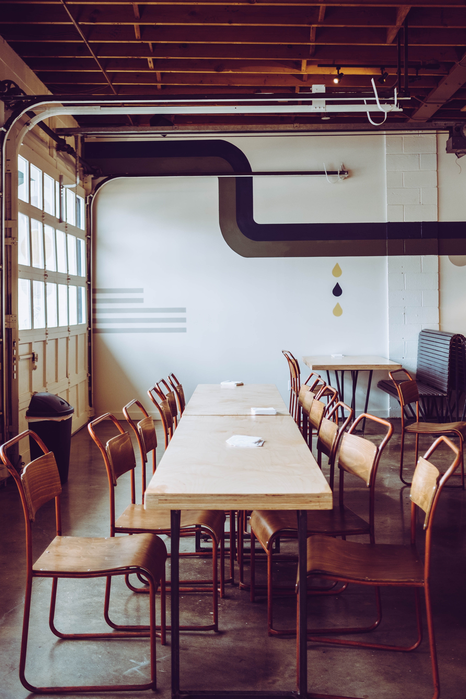

Mes dernières créations
Cantine
Cantine est un projet de gestion conçu,pour les parents, afin de faciliter l'inscription des enfants à une cantine.
Pokéfight
Cette application permet aux utilisateurs d'obtenir des informations détaillées sur les différents Pokémon et imaginer des scénarios combats entre Pokémon.

FITCLUB
Cette interface attrayante et conviviale qui s'ajuste automatiquement à différents appareils

CRM Classic M
C'est une application de gestion relation client " tableau de bord"

cantine
Cantine est un projet de gestion conçu pour faciliter l'inscription des enfants à une cantine. Il a été développé en utilisant le Framework Symfony qui offre une approche orientée objet (POO) ainsi que des outils tels que Composer et Bootstrap. Les parents peuvent ainsi gérer facilement les inscriptions de leurs enfants.
- Symfony
- bootstrap
- composer
Pokéfight
J'ai développé une application de Pokéfight en utilisant PHP. J'ai fait des tests unitaires avec PHPUnit, puis j'ai utilisé une API qui me permet d'échanger les données avec mon application. Cette application permet aux utilisateurs d'obtenir des informations détaillées sur les différents Pokémon et imaginer des scénarios combats entre Pokémon.
- Poo
- API
- Bootstrap
- Composer
Fitclub
Ce projet m'a permis de mettre en pratique mes connaissances en HTML et CSS, pour créer une interface attrayante et conviviale qui s'ajuste automatiquement à différents appareils.
- HTML
- CSS
- Bootstrap

CRM Classic Models
C'est une application de gestion de la relation client " tableau de bord". On peut y visualiser les différentes commandes réalisées, ainsi que l'historique des clients. Ce projet a été realisé avec du php, sql ,bootstrap.
- PHP
- SQl
- Bootstrap